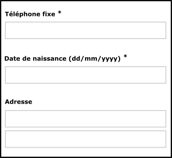
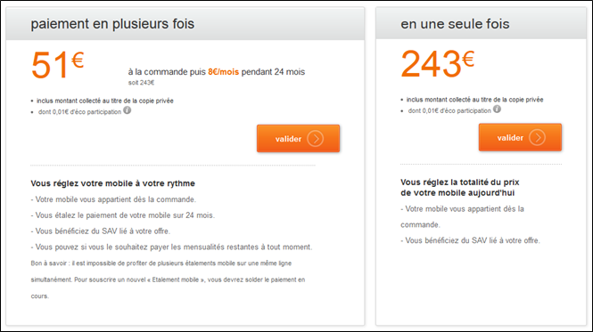
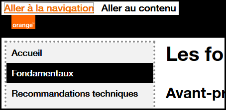

Critères incontournables pour le développement
1. Donner un titre aux pages
Cible : tout le monde et en particulier, les personnes déficientes visuelles.
Quand : dès la conception et pendant le développement.
Description :
Donner à chaque page un titre qui lui est spécifique et qui reflète son contenu ou sa fonction (balise <title>).
Le titre de la page est le premier élément lu par la synthèse vocale, il doit permettre d'identifier formellement la page sur laquelle on se trouve.
À vérifier :
- Bien qu'il n'y ait pas de règle, en général, on va de l'information la plus spécifique vers la moins spécifique (ex.: nom de la page courante - nom du site). Dans d'autres contextes d'utilisation pour lesquels l'utilisateur à de nombreuses applications ou sites ouverts en même temps, il vaut mieux aller de l'information la plus générale vers la plus spécifique (ex.: nom du site - nom de la page).
- Lorsque le contenu de la page est modifié dynamiquement (affichage du résultat d'une recherche, erreurs dans un formulaire, action utilisateur ajoutant du contenu...), le titre de la page doit refléter cette modification du contenu.
Objectif utilisateur :
Permettre aux utilisateurs d'identifier le sujet d'une page, de se repérer et se faire une idée précise du contenu de la page sans avoir à le lire. C'est, notamment, le premier élément vocalisé par un lecteur d'écran.
Exemple valide : <title>Accueil - Espace client Orange</title>
Exemple non-valide :<title>Accueil</title>
Référence : WCAG 2.4.2
2. Donner des titres aux rubriques
Cible : tout le monde et en particulier, les personnes déficientes cognitives, avec des difficultés pour lire et déficientes visuelles.
Quand : dès la conception, à la rédaction du contenu et pendant le développement.
Description :
Identifier les balises de titres à utiliser (balises HTML h1 jusqu'à h6) pour structurer le contenu des pages.
Les personnes malvoyantes naviguant à l'aide d'un lecteur d'écran peuvent accéder à la liste des titres de la page pour naviguer rapidement.
Tout comme dans un fichier Word, il est possible d'utiliser la table des matières si des titres ont correctement été positionnés à l'intérieur du document.
À vérifier :
- Les titres doivent être pertinents et non vides.
- Il ne doit pas exister de saut dans la hiérarchie des titres (on ne passe pas directement d'un titre
h2à un titreh4). - On peut mettre plusieurs
h1par page (se limiter tout de même à deux dans la majorité des cas). - Les lecteurs d'écran ne prennent pas en compte les titres masqués (
visibility: hidden;,display: none;ouaria-hidden). - Le contenu généré dynamiquement doit aussi respecter cette exigence.
Objectif utilisateur :
- Pour tous les utilisateurs : améliorer la structure de la page et de son contenu.
- Pour les utilisateurs déficients visuels, déficients cognitifs et difficultés de lecture : faciliter la navigation et l'accés au contenu.
Objectif technique :
- Pour les moteurs de recherche : améliorer le référencement.
Exemple valide :
Un titrage de page cohérent et pertinent :
<h1>Accueil - Orange</h1>
<h2>Les actualités</h2>
<h2>La fibre arrive !</h2>
<h3>Êtes-vous éligible ?</h3>
Exemple non-valide :
Un titrage de page avec un saut de niveau h2->h4 :
<h1>Accueil - Orange</h1>
<h2>Les actualités</h2>
<h2>La fibre arrive !</h2>
<h4>Êtes-vous éligible ?</h4>
Référence : WCAG 1.3.1
3. Assurer un contraste suffisant entre texte et fond
Cible : tout le monde, en particulier, les utilisateurs sur mobile et tablette, les personnes malvoyantes, éprouvant des difficultés de lecture ou avec un déficit d'attention et les seniors.
Quand : dès la phase de conception et lors du développement.
Description :
Le niveau de contraste entre le texte et l'arrière-plan, doit être suffisamment élevé.
Un niveau de contraste insuffisant sera préjudiciable pour les utilisateurs ayant des difficultés visuelles ainsi que pour les utilisateurs de mobiles et tablettes se trouvant dans un environnement très lumineux.
Exemple non valide :
Le texte "film | 20h40 ..." ne présente pas un contraste suffisant. Celui-ci ne sera pas lisible par tous les utilisateurs.

À vérifier :
- Le contraste entre la couleur du fond et celle du texte doit être 4.5:1 minimum et ceci également pour du texte sous forme d'image porteur d'information.
- Pour des applications principalement utilisées en web mobile ou en mobilité, le niveau de contraste des principaux éléments doit être de 7:1 afin d'assurer une bonne lisibilité pour tous.
- Les liens doivent être facilement identifiables par rapport au reste du texte.
Objectif utilisateur :
Faciliter la lecture à tous les utilisateurs, déficients visuels ou personne dans un environnement lumineux défavorable (en mobilité).
Outil :
L'application colour contrast analyser permet de mesurer rapidement des niveaux de contraste de couleurs (gratuit pour mac et windows).
Référence : WCAG 1.4.3
4. Ne pas utiliser la couleur ou l'information sensorielle comme seule source d'information
Cible : tout le monde, en particulier, les daltoniens et plus généralement les personnes malvoyantes ou ayant une déficience cognitive, auditive et les seniors.
Quand : dès la phase de conception et lors du développement.
Description :
Ne pas utiliser la couleur ou une information sensorielle (forme, taille, son, orientation, localisation visuelle...) comme la seule façon de véhiculer de l'information, d'indiquer une action, de solliciter une réponse ou de distinguer un élément. L'information fournie par un changement de couleur ou une information sensorielle doit être complétée par une information textuelle (alternative) ou/et structuration sémantique.
À vérifier :
- Faire une capture d'écran et passer la en noir et blanc. La perte des couleurs ne doit pas entraîner de difficulté dans la navigation, ni provoquer de perte d'information.
- Couper le son, le niveau d'information doit rester identique.
Objectif utilisateur :
Permettre aux utilisateurs ne distinguant pas les couleurs ou l'information sensorielle (les daltoniens, déficients visuels, déficients auditifs, utilisateurs de mobile en luminosité extérieure, en milieu bruyant... ), d'accéder tout de même à l'information par d'autres moyens.
Exemple :
Pour un graphique type camembert, où chaque partie est colorée différemment, ajouter par exemple une texture différente pour les identifier sans la couleur.
Exemple valide :
Exemple non-valide :
Cet exemple n'est pas valide, car l'information est transmise uniquement par la couleur.
Référence : WCAG 1.4.1
5. Mettre en place des listes
Cible : tout le monde et en particulier, les personnes déficientes visuelles, avec des déficiences cognitives.
Quand : dès la conception et à la rédaction du contenu.
Description :
La page, si besoin, doit posséder des listes sémantiquement pertinentes. Sémantiser le contenu HTML en utilisant les balises :
olpour les listes ordonnéesulpour les listes non ordonnéeslipour les éléments de liste
À vérifier :
- Il ne doit pas y avoir de liste vide.
- Il ne doit pas y avoir de liste avec un seul élément (car ce n'est pas une liste, à moins que cette liste ne soit générée dynamiquement !).
Objectif utilisateur :
Utiliser des listes permet d'identifier, regrouper et présenter séquentiellement des éléments de même nature.
Objectif technique :
Oblige à la structuration cohérente du contenu par le créateur du site.
Référence : WCAG 1.3.1
6. Séparer le contenu, de l'interactivité et de la présentation
Cible : tout le monde et en particulier, les personnes déficientes visuelles, avec des difficultés pour lire ou avec un déficit d'attention.
Quand : lors du développement.
Description :
Séparer strictement le contenu (HTML), l'interactivité (Javascript) et la présentation (CSS).
À vérifier :
- Ne pas faire de mise en pages en tableaux, ceux-ci étant réservés aux données tabulaires.
- Éviter d'utiliser des images pour afficher du texte, préférer les habillages CSS.
- Utiliser des classes CSS plutôt que manipuler des styles CSS en ligne dans le code HTML.
- Ne pas utiliser les pseudo éléments CSS (::before, ::after...) pour afficher du contenu porteur d'information
- Ne pas câbler des évènements Javascript directement dans le code HTML mais gérer l'interactivité dans un script ou un fichier JS à part.
Objectif utilisateur :
Permettre aux utilisateurs, via leur agent utilisateur ou aide technique (par exemple, leur navigateur) de modifier le rendu visuel de la page (grossissement, couleur, position...). Par exemple, de grossir le texte sans problème de mise en pages.
Objectif technique :
Améliore globalement la maintenabilité.
Référence : WCAG 1.3.1, 1.4.5
7. Valider le code
Cible : tout le monde.
Quand : pendant et à la fin du développement.
Description :
Le code source de la page doit être valide au niveau HTML.
À vérifier :
Dans le code HTML s'assurer que :
- les éléments ont des balises de début et de fin
- les éléments sont imbriqués conformément à leurs spécifications
- les éléments ne contiennent pas d'attributs dupliqués
- chaque ID est unique
Objectif utilisateur :
Des erreurs de validation peuvent empêcher l'accès à certains contenus.
Objectif technique :
- Assurer l'interopérabilité, la maintenabilité du code HTML.
- Accroître la compatibilité avec les aides techniques.
Référence : WCAG 4.1.1
Outil : validateur HTML et CSS du W3c
8. Indiquer la langue principale et les changements de langue
Cible : pour tous et en particulier, les personnes déficientes visuelles.
Quand : lors du le développement.
Description :
Spécifier la langue principale du document grâce à l'attribut lang et/ou xml:lang dans la balise html.
Préciser également la langue d'un contenu exprimé dans une langue autre que la langue principale, en utilisant l'attribut lang et/ou xml:lang dans l'élément html contenant l'expression en langue étrangère.
À vérifier :
Pour les mots ou les expressions en langue étrangère passés dans l'usage courant (Google, newsletter...) ou les noms propres, ne pas indiquer de changement de langue.
Objectif utilisateur :
Cet attribut permet d'indiquer à la synthèse vocale la langue à utiliser.
Objectif technique :
Permettre aux moteurs de recherche d'identifier la langue d'une page pour améliorer le référencement naturel.
Exemple pour une page en français :
- pour du HTML :
<html lang="fr"> - pour du XHTML :
<html xmlns="http://www.w3.org/1999/xhtml" xml:lang="fr" lang="fr">
Exemple de changement de langue : découvrir Orange <span lang="fr">live</span> TV
Référence : WCAG 3.1.1, 3.1.2
9. Associer une étiquette pertinente à chaque champ de formulaire
Cible : tout le monde et en particulier, les personnes déficientes visuelles et cognitives, avec un déficit d'attention et les utilisateurs de tactiles (mobile et tablette).
Quand : lors de la conception et lors du développement.
Description :
Chaque champ de formulaire doit être accompagné d'un libellé permettant d'identifier le rôle du champ, le type de donnée et le format attendu.
Le libéllé doit être proche visuellement du champ afin qu'on fasse facilement le lien entre eux (notamment pour les utilisateur de zoom ou de loupe logicielle, voire sur mobile).
Chaque libellé doit être inclus dans une balise label, elle-même associée au champ de formulaire grâce à un attribut for renseigné, reprenant la valeur de l'id du champ.
Dans certains cas, il semble inutile d'accompagner le champ de formulaire d'un libellé (champ de recherche accompagné d'un bouton en forme de loupe par exemple). Dans ce cas, prévoir tout de même un libellé, l'associé au champ de formulaire et le rendre invisible à l'écran (utiliser une classe de masquage accessible), ainsi celui-ci sera quand même vocalisé par les lecteurs d'écran.
L'attribut title positionné sur une balise de champ de formulaire peut faire également office de label tout comme les attributs aria-label et aria-labelledby dans cette ordre de préférence.
À vérifier :
Pour tout élement de formulaire, le libellé est proche visuellement du champ qu'il identifie.
Pour les boutons radio et les cases à cocher, l'utilisation de la balise label est, parfois, à compléter par un autre dispositif (title, aria-labelledby, aria-label ou fieldset et legend).
Pour les champs obligatoires, ceci doit être précisé dans le label via une image, un symbole texte (* par exemple) ou du texte et/ou une propriété aria-required.
Objectif utilisateur :
Ne pas respecter cette exigence est un point bloquant pour tout utilisateur de synthèse vocale mais aussi loupe logicielle car ceci ne savent pas entrer comme valeur dans les champs. Pour les utilisateurs de mobile et les déficients moteurs cela permet d'activer ou cliquer plus facilement sur les éléments de formulaire.
Exemple valide : 
Exemple non-valide :

Exemple de formulaire accessible :
Consulter l'exemple de formulaire accessible pour plus d'informations.
Référence : WCAG 3.3.2
10. Détecter, identifier les erreurs et suggérer des corrections
Cible : tout le monde et en particulier, les personnes déficientes visuelles, cognitives, avec des difficultés pour lire ou ayant un déficit d'attention et les seniors.
Quand : lors de la conception et lors du développement.
Description :
Les erreurs sont automatiquement détectées, l'utilisateur est averti par la modification du titre de la page, l'élément de formulaire en erreur est identifié et l'erreur est décrite à l'utilisateur sous forme de texte. Si besoin, une correction est suggérée.
Enfin les libellés des messages d'erreur doivent être explicites.
À vérifier :
L'identification du champ en erreur ainsi qu'une éventuelle suggestion de correction peuvent être ajoutées dynamiquement à la balise label, en priorité, mais aussi à l'attribut title ou les attributs aria-label et aria-labelledby selon le contexte et les besoins.
Objectif utilisateur :
Guider l'utilisateur en cas d'erreurs permet d'améliorer la compréhension et la correction des erreurs, pour tous les utilisateurs, en particulier, pour les novices sur internet, les seniors et les personnes déficientes cognitives.
Exemple valide : 
Exemple non-valide : 
Exemple de formulaire accessible :
Consulter l'exemple de formulaire accessible pour plus d'informations.
Référence : WCAG 3.3.1, 3.3.3
11. Fournir un équivalent textuel pour les images
Cible : tout le monde et en particulier, les personnes déficientes visuelles ou cognitives.
Quand : lors de la conception et lors du développement.
Description :
Mettre, dans toute balise img, un attribut alt pertinent :
- Pour les images cliquables : préciser la fonction / la cible du lien dans l’attribut
alt, - Pour les images porteuses d'information : mettre un
altdécrivant l'information contenue dans l'image - Pour les images contenant du texte : mettre un attribut
altreprenant au moins le texte de l’image, - Pour les images décoratives : mettre un attribut
altvide, - Pour les images dont le contenu du
altserait trop long (schémas, graphes...), mettre à proximité de l'image à décrire, sa description sous forme de texte dans la page ou, un lien pointant vers une page html contenant cette description.
À vérifier :
Toute balise img doit posséder un attribut alt.
Pour les images non-porteuses d'information, il est préférable de les passer en image de fond CSS.
Pour les graphes, la solution, peut être, de mettre un lien sous l'image permettant d'accéder à un tableau de chiffre (le faire apparaître dans la même page ou sur une autre page).
Objectif utilisateur : Permettre l'accès à l'information incluse dans une image pour des utilisateurs qui n'y ont pas accès. Point bloquant : une image sans description textuelle est inexploitable par des personnes ayant des déficiences visuelles ou celles n'affichant pas les images (mobile, faible bande passante...).
Objectif technique :
Améliorer le référencement naturel.
Exemple valide :<a href="./home"><img src="logo_orange.jpg" alt="Retour à l'accueil"></a><img src="banner_bouquet_famille.png" alt="Bon plan, bouquet famille max à 2 euros par mois pendant 12 mois au lieu de 16 euros.">
Exemple d'alternative vide :
Dans l'exemple ci-dessous, le picto à droite n'a pas besoin d'être vocalisé puisque le texte situé à gauche apporte déjà l'information.
Renseigner l'attribut alt dans ce cas apporterait une information redondante.

<h3>Le service 24h garanti</h3><img src="service-24.png" alt="">
Référence : WCAG 1.1.1
12. Fournir un transcrit pour toute piste audio ou vidéo
Cible : tout le monde et en particulier, les personnes déficientes visuelles, cognitives et auditives et celle dont le Français est mal maîtrisé.
Quand : lors de la conception et lors du développement.
Description :
Fournir, pour toute piste audio ou vidéo porteuse d'information, un transcrit complet dans la page elle-même ou grâce à un lien à proximité de celle-ci.
À vérifier :
Un transcrit complet est le texte contenant l'ensemble des informations visuelles et auditives porteuses de sens.
Objectif utilisateur :
Fournir un moyen d'accès à l'information visuelle et auditive pour des personnes ne pouvant pas en bénéficier : malvoyants, aveugles, sourds, déficients cognitifs, ordinateur sans haut-parleurs, environnement lumineux ou bruyant.
Objectif technique :
Permet le référencement de tout contenu audio et vidéo.
Référence : WCAG 1.2.3
13. Structurer les tableaux de données
Cible : tout le monde et en particulier, les personnes déficientes visuelles.
Quand : dès la phase de conception et lors du développement.
Description :
Pour des données tabulaires :
- utiliser l'élément
tableavec les éléments enfantsth(pour les cellules d'entêtes),td,tr. - utiliser l'attribut
scopeavec la valeur row/col pour associer les cellules d'en-têtes et les cellules de données ou pour des tableaux complexes, utiliser les attributsidetheaders. - utiliser la balise
caption, une baliseh1àh6juste avant le tableau ou lier un texte proche du tableau via unaria-labelledbydans l'élémenttablepour associer un titre au tableau. - mettre un attribut
summarydans l'élémenttablepour expliciter la structure dans le cas d'un tableau complexe. Attention cet attribut est déprécié en HTML5, il faudra donc rajouter, si besoin, le contenu dusummarydans le titre du tableau.
À vérifier :
- Rappel : ne pas utiliser de tableaux à des fins de mise en pages.
- La légende (
caption) peut être remplacé par un titre de section (hx) placé avant le tableau.summary, quant à lui, n'est nécessaire que pour des tableaux complexes. - Préférer scinder un tableau complexe en plusieurs tableaux plus simples.
- Mettre un résumé (attribut
summary) dans le tableau pour expliciter la structure dans le cas d'un tableau complexe. - Les balises
tbody,tfootettheadn'ont aucune influence sur l'accessibilité, il n'est donc pas d'obligation à les utiliser.
Objectif utilisateur : Donner un résumé et un titre aux tableaux de données permet à tous d'en connaître l'objet rapidement sans avoir à le parcourir. Pour des utilisateurs déficients visuels, lier les cellules aux en-têtes permet de se situer dans le tableau et de comprendre les données de celui-ci.
Objectif technique : Optimiser le référencement naturel.
Référence : WCAG 1.3.1
14. Utiliser des tailles relatives pour permettre le grossissement des textes
Cible : tout le monde et en particulier, les personnes déficientes visuelles, en mobilité et seniors.
Quand : lors du développement.
Description :
N'utiliser pour les tailles de police que des tailles relatives (em, rem, %) et pour les éléments conteneurs permettant l'agrandissement du texte seul de 200%.
À vérifier :
- Ne pas utiliser le pixel (px) pour des tailles qui doivent pouvoir s'agrandir si l'on ne zoome que les textes.
- Les éléments de formulaire doivent, eux aussi, posséder des tailles relatives pour s'agrandir.
- Penser à rendre fluides les conteneurs des textes afin qu'ils puissent s'agrandir lorsque les textes sont zoomés.
- Dans Firefox, faire Affichage>Zoom>Zoom texte seulement, utiliser les réglages du zoom pour atteindre 200%. Vérifier qu'il n'y a pas de perte d'information (disparition ou chevauchement de texte).

Objectif utilisateur : Permettre aux utilisateurs (malvoyants, en mobilité, seniors...) d'augmenter la taille du texte pour plus aisément accéder à l'information.
Exemple :
Voir l'exemple gestion du zoom, agrandissement de la taille du texte pour plus d'informations.
Référence : WCAG 1.4.4
15. Rendre l'intitulé d'un lien compréhensible hors contexte
Cible : tout le monde et en particulier, les personnes déficientes visuelles, cognitives ou ayant un déficit d'attention.
Quand : dès la phase de conception et lors du développement.
Description :
Rendre compréhensible les intitulés des liens hors contexte pour tous les utilisateurs et, en particulier, les déficients visuels. Lors de la navigation avec un lecteur d'écran, il est possible d'accéder à la liste des liens de la page pour naviguer rapidement. Si votre page contient plusieurs liens "en savoir plus", il sera impossible de les différencier les uns des autres.
S'il n'est pas possible de rendre un lien plus explicite, faute de place, mais que l'intitulé du lien actuel est suffisant pour les personnes qui ont accès à l'écran, le texte du lien peut être complété par un contenu supplétif caché ou en utilisant un aria-label ou aria-labelledby, spécifiquement pour les utilisateurs qui naviguent à l'aide d'un lecteur d'écran.
Par exemple dans l'image ci-dessous, les deux liens "valider" ne sont pas suffisamment explicites pour une personne déficiente visuelle. Par contre quand on voit l'écran, la disposition fait qu'il n'y a pas d'ambiguïté sur le rôle de chaque bouton.

Dans ce cas, ajouter un span en masquage accessible pour compléter l'intitulé du lien. Celui-ci ne sera pas affiché à l'écran, mais sera vocalisé par les outils d'assistance.
Exemple :<a href="...">valider<span class="masquage-accessible"> le paiement en plusieurs fois</span></a><a href="...">valider<span class="masquage-accessible"> le paiement en une seule fois</span></a>
Une autre solution consiste à utiliser un attribut aria-label ou aria-labelledby pour préciser l'intitulé du lien.
En complément de ces solutions, on pourrait ici également utiliser un attribut title pour faire apparaître une info-bulle "valider le paiement en plusieurs fois" au survol du lien avec la souris.
À vérifier : S'assurer que les liens isolés du contenu donnent une bonne information sur l'action déclenchée ou sa destination. Une page ne doit pas avoir plusieurs liens dont l'intitulé est le même, mais pointant sur des destinations/actions différentes.
Objectif utilisateur : Permettre à un utilisateur n'ayant pas accès au contexte visuel de connaître la destination du lien. Notamment important pour les utilisateurs naviguant grâce à une liste de liens extraite de la page (lecteurs d'écran) ou les utilisateurs de loupe logicielle qui ne voient qu'une fraction de la page.
Objectif technique : Expliciter les liens permet d'améliorer le référencement naturel.
Exemple valide :
Associer à un lien "cliquer ici", un texte caché hors écran : "commander votre téléphone".
Exemple non-valide :
Liens "Cliquez ici" ou "Lire la suite..." sans plus de précision.
Référence : WCAG 2.4.9
16. Prévenir l'utilisateur de l'ouverture d'une nouvelle fenêtre
Cible : tout le monde et en particulier, les personnes déficientes visuelles, cognitives ou ayant un déficit d'attention.
Quand : dès la phase de conception et lors du développement.
Description :
Prévenir l'utilisateur de l'ouverture de toute nouvelle fenêtre en l'indiquant dans l'intitulé du lien.
En cas d'impossibilité avérée, utiliser un icône (image avec un alt) en ajoutant l'indication d'ouverture d'une nouvelle fenêtre ou juste 'nouvelle fenêtre'.
En dernier recours, un texte en masquage accessible (hors écran).
Exemple :
Exemple d'icône pouvant indiquer l'ouverture d'une nouvelle fenêtre.
À vérifier : Pour tout lien ouvrant une nouvelle fenêtre ou un nouvel onglet, une mention du type "(nouvelle fenêtre)" est présente dans l'intitulé du lien, ou la mention (nouvelle fenêtre) est positionnée hors écran via CSS (masquage accessible).
Objectif utilisateur : Éviter l'ouverture inattendue de fenêtre, car cela peut gêner, perturber ou désorienter l'utilisateur. En particulier, pour des personnes en mobilité, utilisant des synthèses vocales ou présentant des déficiences cognitives.
Exemple valide :
Pour un lien pointant à l'extérieur du site et ouvrant une nouvelle fenêtre, l'intitulé du lien texte "Accéder au site orange.com (nouvelle fenêtre)", pour une image-lien avec un alt="consulter les CGU (nouvelle fenêtre)".
Référence : WCAG 3.2.2
17. Permettre d'utiliser les principales fonctionnalités de l'application au clavier
Cible : tout le monde et en particulier, les personnes déficientes visuelles, motrices et en mobilité.
Quand : dès la phase de conception et lors du développement.
Description : Mettre en place des gestionnaires d'événements qui ne s'appuient pas uniquement sur des événements souris.
À vérifier : Toutes les actions importantes effectuées à la souris peuvent aussi l'être qu'avec le clavier, quitte à proposer une alternative spécifique pour les interactions complexes (drag'ndrop, gestes à plusieurs doigts sur mobile ...).
Objectif utilisateur : Permettre aux utilisateurs qui ne peuvent pas utiliser la souris (non ou malvoyants, déficients moteurs, web mobile, en mobilité...) d'accéder aux fonctionnalités principales de l'application au clavier.
Exemple valide :
- Un sous-menu qui se déroule au survol doit aussi se dérouler quand l'item de menu parent reçoit le focus clavier.
- Dans un webmail, un clic droit permet d'accéder à un menu pour vider la corbeille, un bouton "vider la corbeille" est également présent dans l'interface quand la corbeille est en cours de consultation.
Exemple non-valide :
Une fonctionnalité réalisable qu'à l'aide du drag'n drop et sans équivalent au clavier.
Référence : WCAG 2.1.1
18. Rendre le parcours du focus séquentiel et logique sans piège clavier
Cible : tout le monde et en particulier, les personnes déficientes visuelles, motrices, cognitives et en mobilité.
Quand : lors du développement.
Description :
Les éléments (liens, boutons, éléments de formulaire) doivent recevoir le focus dans un ordre logique pour l'utilisateur, sans que celui-ci ne reste piégé ou bloqué, même pour du contenu généré dynamiquement apparaissant ou disparaissant (modification du DOM, Ajax,...).
À vérifier :
- Pour valider cette exigence, la position du focus doit être visible à tous moments (propriété
outlineet:focusen CSS), voir exigence 19, ci-dessous. - Attention à l'ordre d'insertion des éléments dans le code HTML, cela a une influence sur l'ordre de déplacement du focus. Un élément présent à la fin du code source, mais positionné tout en haut de la page via CSS sera le dernier à recevoir le focus.
- Pour la maintenabilité, éviter l'utilisation de l'attribut
tabindexavec des valeurs supérieur à 0.
Objectif utilisateur : Permettre la navigation logique sans piège au clavier dans les pages de l'application. Nécessaire pour les utilisateurs naviguant qu'au clavier (non ou malvoyants, déficients moteurs, déficients cognitifs, en mobilité).
Exemple non-valide :
Une page contenant un lecteur vidéo dont le focus peut entrer à l'intérieur du lecteur, mais ne peut pas en sortir (piège clavier).
Référence : WCAG 2.4.3, 2.1.2
19. Rendre visible le focus en toute circonstance
Cible : tout le monde et en particulier, les personnes déficientes visuelles, motrices, cognitives, ayant un déficit d'attention et en mobilité.
Quand : dès la phase de conception et lors du développement.
Description :
Ne pas masquer le focus et si nécessaire le rendre suffisamment visible (par exemple, en modifiant la propriété CSS outline) sur tous les éléments susceptibles de recevoir celui-ci (liens, boutons, éléments de formulaire). Vous pouvez meêm amplifier la visibilité du focus afin qu'il soit plus facilement identifiable.
Lorsqu'un effet est visible sur un élément lors du survol de la souris (:hover en CSS par exemple), cet effet doit être également affiché à la prise du focus (:focus).
À vérifier :
Dans beaucoup de frameworks front ou dans les reset CSS, la propriété outline (qui permet de visualiser le focus) est désactivée (outline: none;), penser à la redéfinir et vérifier que le focus est visible sur tous les éléments le recevant.
Objectif utilisateur : Permettre la visibilité du focus sur tous les éléments actifs, notamment pour les utilisateurs de clavier (déficients visuels, moteurs ou ceux ayant des déficiences d'attention et de mémorisation ou en mobilité).
Exemple valide :
Focus positionné sur le lien "HTC Desire 620".

Exemple non-valide :
Focus positionné sur le lien "HTC Desire 620".

Référence : WCAG 2.4.7
20. Fournir des liens d'évitement
Cible : utile pour les utilisateurs de mobile et tablette, les personnes déficientes visuelles et les personnes souffrant de handicap moteur ou en mobilité.
Quand : dès la phase de conception et lors du développement.
Description :
Mettre en place des liens d'accès direct (liens d'évitement) permettant d'accéder aux principales zones de la page (navigation, contenu, pied de page, recherche...) grâce à des liens internes vers des ancres (balises <a> ou tout élément HTML possédant un attribut id). En cas de fortes contraintes, ces liens peuvent être cachés et affichés uniquement lors de la navigation clavier.
À vérifier : Lorsqu'un lien d'évitement est activé, vérifier que le focus est bien déplacé (il ne s'agit pas uniquement de faire défiler la page au bon endroit).
Objectif utilisateur : Faciliter la navigation pour des utilisateurs naviguant au clavier, des utilisateurs malvoyants, utilisateurs de loupe logicielle ou de téléphone mobile.
Exemple :
Des liens d'évitement ("Aller à la navigation", "Aller au contenu") sont disponibles sur ce site.
Pour les faire apparaître, placer le focus en haut de la page en cliquant sur la barre d'adresse de votre navigateur par exemple puis appuyer plusieurs fois sur la touche TAB.

Référence : WCAG 2.4.1
21. Animation
Cible : les personnes malvoyantes, les personnes éprouvant des difficultés de lecture, d'attention ou de compréhension, les personnes épileptiques.
Quand : lors de la conception du service et lors de la conception graphique.
Description :
Tout contenu en mouvement, mis à jour, clignotant doit pouvoir être stoppé, caché ou mis en pause par l'utilisateur.
Par ailleurs, éviter autant que possible les flashs lumineux et les changements brusques de luminosité (cf. Le logo des JO provoque des crises d'épilepsie).
Il faut donc prévoir une pause au chargement de la page ou un moyen de stopper ou mettre en pause l'animation, la mise à jour ou le clignotement via un bouton par exemple.
Exemple : 
Un carrousel qui défile automatiquement doit se mettre en pause au survol de la souris ou lorsque celui-ci a le focus.
Il est également possible d'ajouter un bouton "pause" directement dans l'interface.
Référence : WCAG 2.2.2
22. S'assurer que les principales fonctionnalités sont utilisables avec les lecteurs d'écran
Cible : tout le monde et en particulier, les personnes déficientes visuelles.
Quand : lors du développement.
Description :
Respecter les recommandations générales d'accessibilité, utiliser en priorité les composants standards HTML, sinon, utiliser l'ARIA (Accessible Rich Internet Application) pour les composants d'interface complexes.
À vérifier : S'assurer de l'absence de point bloquant avec les couples navigateur/lecteur d'écran (FireFox/NVDA, IE/Jaws, Safari/VoiceOver) dans les parcours utilisateurs (scénarios d'utilisation des principales fonctionnalités de l'application). En effet, les utilisateurs de lecteur d'écran sont les plus impactés par un manque d'accessibilité, on repère un grand nombre de problèmes en vérifiant cette exigence.
Objectif utilisateur : Permettre à l'utilisateur de lecteur d'écran d'accéder aux principales fonctionnalités de l'application, mais aussi de s'assurer pour tous les utilisateurs de l'utilisabilité de l'application.
23. Conserver un ordre de tabulation logique lors d'une insertion ou d'une modification dynamique
Cible : tout le monde et en particulier, les personnes déficientes visuelles, cognitives ou avec un déficit d'attention.
Quand : lors du développement.
Description : Lorsqu'un élément est affiché suite à une interaction de l'utilisateur :
- celui-ci doit apparaître dans le code source juste après l'élément déclenchant (exemple : menu dépliant),
- ou le focus doit être déplacé sur un des premiers éléments du contenu généré (lien, bouton, titre, paragraphe...).
Lors de la disparition de contenu, le focus doit être redonné à l'élément déclenchant.
Par exemple à la fermeture d'une boite de dialogue, le focus doit être repositionné sur l'élément qui a déclenché l'ouverture (bouton, lien ...).
Pour rappel : le contenu dynamiquement généré doit être accessible et donc respecter tous les critères d'accessibilité.
Il existe plusieurs solutions pour prévenir l'utilisateur en cas d'apparition/disparition de contenu :
- via du texte
- en déplaçant le focus
- en utilisant de l'ARIA
Voir l'exemple de menu déroulant pour la mise en pratique de l'attribut aria-haspopup.
À vérifier :
- Le déplacement du focus s'effectue de manière logique (ordre de lecture naturel).
- L'ordre de lecture n'a pas été redéfini en utilisant des attributs
tabindex(avec des valeurs positives).
En pratique, l'attribut tabindex devrait être utilisé qu'avec deux valeurs :
tabindex="-1": pour interdire un élément à recevoir le focus via la toucheTABet autoriser celui-ci à recevoir le focus via Javascript.tabindex="0": pour rendre un élément focusable via la toucheTABet via Javascript.
Objectif utilisateur : Permettre à l'utilisateur, par exemple, un non ou malvoyant, de repérer l'apparition de nouveaux contenus et interagir avec ceux-ci.
Référence : WCAG 2.4.3
24. S'assurer que l'utilisateur garde le contrôle lors des interactions
Cible : tout le monde et en particulier, les personnes déficientes visuelles, cognitives ou avec un déficit d'attention.
Quand : dès la phase de conception et lors du développement.
Description : Ne pas induire de changement de contexte lors de la prise de focus, la saisie de données ou l'activation d'un élément de formulaire sans que ce changement soit prévisible (bouton) ou que l'utilisateur ait été averti.
Objectif utilisateur : Donner à tous les utilisateurs la maîtrise des changements de contexte lié à son action.
Exemple :
Un formulaire doit obligatoirement avoir un bouton d'envoi. Celui-ci ne doit pas être envoyé automatiquement après la saisie de l'utilisateur.
Référence : WCAG 3.2.1, 3.2.2